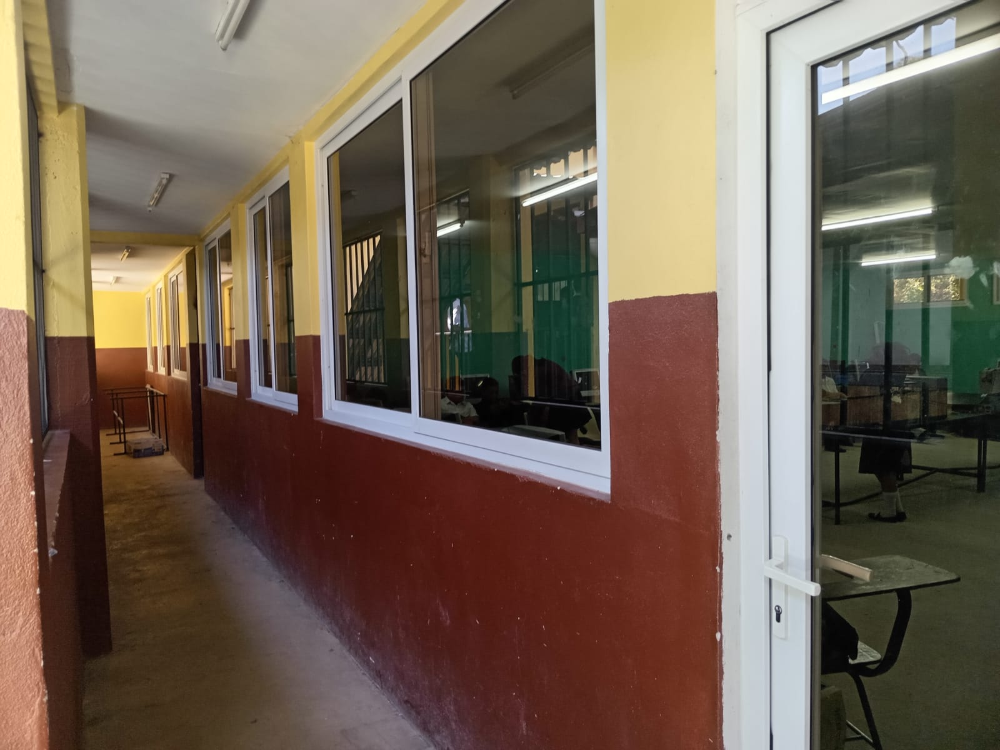
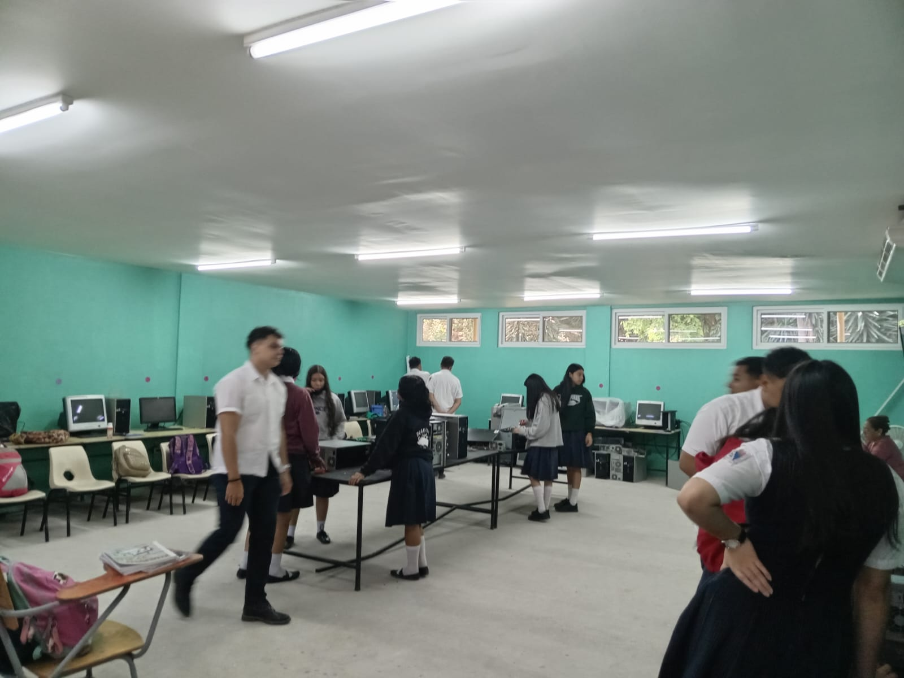
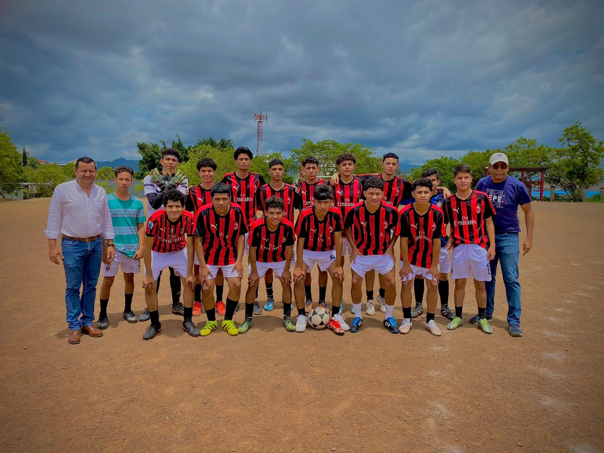
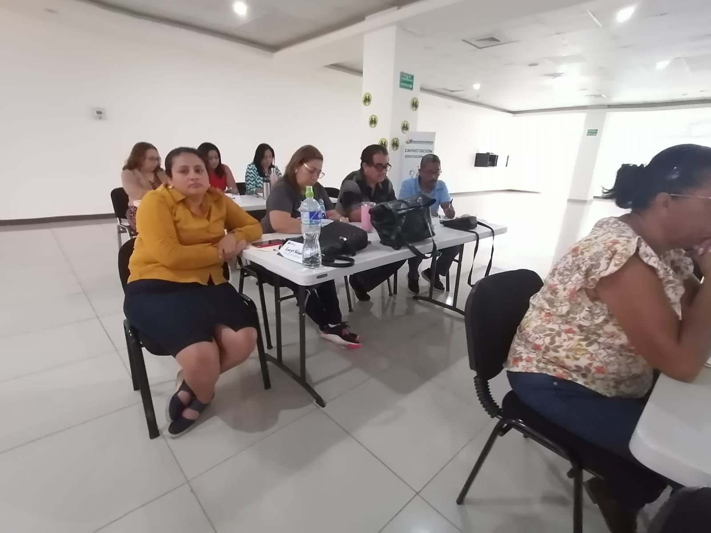

Más Información
Bienvenido a nuestro instituto. Aquí encontrarás información adicional sobre nuestras instalaciones, programas académicos y actividades extracurriculares.
Instalaciones
- Aulas modernas y equipadas con tecnología de última generación.
- 
- Laboratorios de informatica completamente equipados.
- 
- Áreas quimicas para la práctica de diferentes disciplinas.

Programas Académicos
Nuestro instituto ofrece una amplia variedad de programas académicos para satisfacer las necesidades de nuestros estudiantes. Algunos de los programas destacados incluyen:
- Bachillerato técnico en humanidades.
- Bachillerato técnico profesional en informática.
- Bachillerato técnico profesional en finanzas.
Actividades Extracurriculares
Además de los programas académicos, también ofrecemos una variedad de actividades extracurriculares para enriquecer la experiencia estudiantil. Algunas de las actividades disponibles son:
- Clubes y grupos estudiantiles.
- Competencias deportivas.
- Talleres y conferencias.
- Eventos culturales y artísticos.

- 
- 

Clubes y grupos estudiantiles.
Competencias deportivas
Talleres y conferencias.
Eventos culturales y artísticos